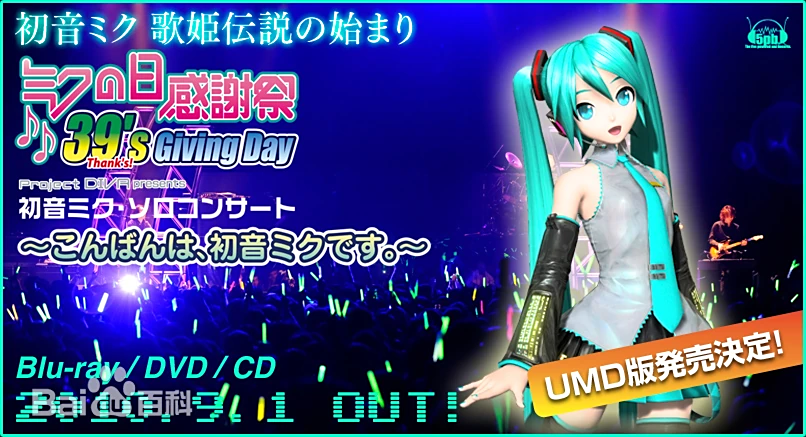
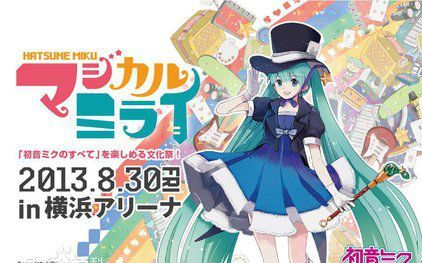
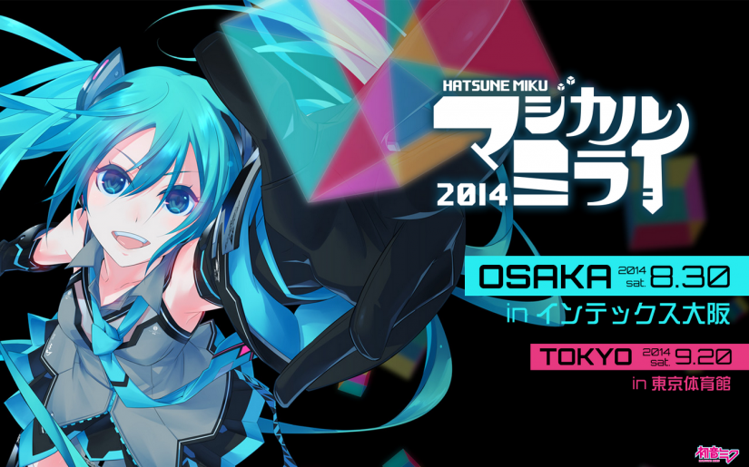

初音未来（はつね みく、初音ミク、Hatsune Miku），是日本Crypton Future Media公司以雅马哈Vocaloid的语音合成引擎为基础开发的虚拟女性歌手软件，初始形象由日本插画家KEI设计，音源由日本声优藤田咲提供，在软件VOCALOID2中首次登场，中国由上海新创华文化发展有限公司代理。
2010年3月9日—东京
“ 未来之日39感谢祭”演唱会（ミクの日感谢祭39's Giving Day）由世嘉公司主办。本次演唱会名称取自“39”（さんsan きゅう kyuu）的日文读音与“thank you”（サンキュ sann kyu）日文读音的谐音。于Zepp Tokyo音乐厅举行。这场演唱会使初音未来成为了第一个使用全息投影技术举办演唱会的虚拟偶像。2500张演唱会门票在短时间内被抢购一空，演唱日当晚有超过3万名忠实拥簇者通过付费网络直播观看
魔法的未来是2013年8月30日在日本横滨ARENA体育馆举办的文化祭活动全称初音未来“ MAGI CAL MIRAI 2013”。活动除了有初音未来的大型演唱会之外，还有同人的创作作品展览以及赞助厂商的VOCALOID相关商品陈列
1.
Sweet Devil
2.
二次元ドリームフィーバー
3.
キャットフード
4.
からくりピエロ
5.
ありふれたせかいせいふく
6.
どうぶつ占い
7.
深海少女
8.
Hello,Worker
9.
erase or zero
10.
ピアノ×フォルテ×スキャンダル
11.
スキキライ
12.
shake it!
13.
Weekender Girl
14.
FREELY TOMORROW
15.
Last Night,Good Night(Re:Dialed)
16.
Leia
17.
东京テディベア
18.
アンハッピーリフレイン
19.
Glow
20.
Tell Your World
21.
39
22.
ODDS&ENDS
安可曲
1.
1/6 -out of the gravity-
2.
ゆめゆめ
分别于大阪国际会展中心（Intex Osaka）与东京体育馆（Tokyo Metropolitan Gymnasium）举行“ 初音未来魔法未来2014”演唱会（初音ミク マジカルミライ 2014）。主题曲为《Next Nest》（ネクストネスト），作者为さつき が てんこもり（代表作：《网游废人的呐喊》、《咚咚向前》等）。
OP High-energy Particle EVALA
1 阳炎眩乱 じん 初音未来
2 二次元Dream Fever PolyphonicBranch 初音未来
3 心脏民主 みきとP 初音未来
4 普通不过的世界征服 ピノキオピー 初音未来
5 喜欢讨厌 HoneyWorks 镜音铃·连
6 活动小丑 40mP 初音未来
7 Weekender Girl kz (livetune)×八王子P 初音未来
8 FREELY TOMORROW Mitchie M 初音未来
9 深海少女 ゆうゆ 初音未来
10 Piano×Forte×Scandal OSTER project MEIKO
11 erase or zero クリスタルP 镜音连&KAITO
12 glow keeno 初音未来
13 Hello, Worker KEI 巡音流歌
14 拂晓抵达 Last Note. 初音未来&巡音流歌
15 仙境与羊之歌 ハチ 初音未来
16 Your World livetune 初音未来
17 东京泰迪熊 Neru 镜音铃
18 Last Night, Good Night (Re:Dialed) livetune 初音未来
19 Cat Food doriko 初音未来
20 EARTH DAY Harry (はりーP) 初音未来
21 将来的梦想 DECO*27 初音未来
22 ODDS&ENDS ryo (supercell) 初音未来
ENCORE
23 Sweet Devil 八王子P 初音未来
24 shake it! emon 初音未来&镜音铃·连
BAND MEMBER INTRODUCTION
25 39 sasakure.UK×DECO*27 初音未来
ENDING
ED Next Nest さつき が てんこもり 初音未来 魔法未来2014主题曲
“初音未来魔法未来2015”演唱会（ 初音ミク マジカルミライ 2015）于日本武道馆举行，并同期召开展览活动。
.jpg)
1 Your World livetune 初音未来
2 树莓*怪物 HoneyWorks 初音未来
3 初次见面，地球人 ピノキオピー 初音未来
4 孑然炉火 koyori(電ポルP) 初音未来
5 恋爱裁判 40mP 初音未来
6 圣枪爆裂男孩 れるりり 镜音连
7 Lost One的号哭 Neru 镜音铃
8 遥控器 じーざす（ワンダフル☆オポチュニティ！） 镜音铃·连
9 Nostalogic yuukiss MEIKO
10 雪人 halyosy KAITO
11 Envy Catwalk トーマ 初音未来
12 深海少女 ゆうゆ 初音未来
13 Sweet Devil 八王子P 初音未来
14 二次元Dream Fever PolyphonicBranch 初音未来
15 Cat Food doriko 初音未来
16 Unhappy Refrain wowaka 初音未来
17 罗密欧与辛德瑞拉 doriko 初音未来
18 glow keeno 初音未来
19 爱Dee Mitchie M 初音未来&巡音流歌
20 Just Be Friends Dixie Flatline 巡音流歌
21 shake it! emon 初音未来&镜音铃·连
22 Packaged livetune 初音未来
23 World is Mine ryo(supercell) 初音未来
24 ODDS&ENDS ryo(supercell) 初音未来
ENCORE
25 Hand in Hand livetune 初音未来 魔法未来2015主题曲
26 39 sasakure.UK×DECO*27 初音未来
MC
27 最初的声音 malo 初音未来
“初音未来魔法未来2016”演唱会（ 初音ミク マジカルミライ 2016）于千叶县幕张国际会展中心举办。主题曲为《 39Music!》，作者为みきとP。
.jpg)
1 39music! みきとP 初音未来 魔法未来2016主题曲
2 幽灵法则 DECO*27 初音未来
3 让其响彻 GigaReol 初音未来
MC1
4 Strangers Heavenz 初音ミク
5 Slow Motion ピノキオピー 初音未来
6 孑然炉火 koyori(電ポルP) 初音未来
7 时光机 1640mP 初音未来
8 Hello, Worker KEI 巡音流歌
9 Dreamin Chuchu emon 巡音流歌
10 爱Dee Mitchie M 初音未来&巡音流歌
11 Doctor=Funk Beat nyanyannya KAITO
12 Nostalogic (MEIKO-SAN mix) yuukiss MEIKO
13 动物占卜 すこっぷ 初音未来
14 Calc. ジミーサムP 初音未来
15 海百合海底谭 n-buna 初音未来
16 隐羞青春期 HoneyWorks 镜音连
17 甜蜜魔法 Junky 镜音铃
18 遥控器 じーざす(ワンダフル☆オポチュニティ！) 镜音铃&镜音连
19 Baby Maniacs -Eight Mix- 八王子P 初音未来
20 树莓怪物 HoneyWorks 初音未来
21 39 sasakure.UK×DECO*27 初音未来
22 shake it! emon 初音未来&镜音铃&镜音连
MC2
23 ray BUMP OF CHICKEN 初音未来
Encore
24 Satisfaction livetune 初音未来
25 假借分身 KulfiQ 初音未来&镜音铃
26 Hand in Hand livetune 初音未来 魔法未来2015主题曲 难忘今宵
MC3
ED Tears River みきとP 初音未来